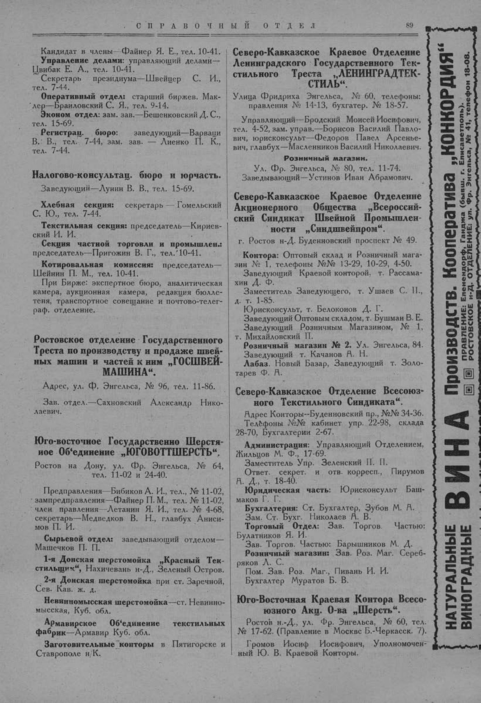

Лист источника 139
Скан

Распознанный текст
СПРАВОЧНЫЙ ОТДЕЛ 89
Кандидат в члены—Файнер Я. Е., тел. 10-41.
Управление делами: управляющий делами—
Цвибак Е. А., тел. 10-41.
Секретарь президиума—Швейцер С. И.,
тел. 7-44.
Оперативный отдел: старший биржев. Мак-
лер—Браиловский С. Я., тел. 9-14.
Эконом отдел: зам. зав.—Бешенковский Д. С.,
тел. 15-69.
Регистрац. бюро: заведующий—Варваци
В. В., тел. 7-44, зам. зав. — Лиенко П. К.,
тел. 7-44.
Налогово-консультац. бюро и юрчасть.
Заведующий—Лунин В. В., тел. 15-69.
Хлебная секция: секретарь — Гомельский
С. Ю., тел. 7-44.
Текстильная секция: председатель—Кириев-
ский И. И.
Секция частной торговли и промышлен.:
председатель—Пригожин В. Г., тел. 10-41.
Котировальная комиссия: председатель—
Шейнин П. М., тел. 10-41.
При Бирже: экспертное бюро, аналитическая
камера, аукционная камера, редакция бюлле-
теня, транспортное совещание и почтово-телег-
раф. отделение.
Ростовское отделение Государственного
Треста по производству и продаже швей-
ных машин и частей к ним „ГОСШВЕЙ-
МАШИНА“.
Адрес, ул. Ф. Энгельса, № 96, тел. 11-86.
Зав. отдел.—Сахновский Александр Нико-
лаевич.
Юго-восточное Государственно Шерстя-
ное Об‘единение „ЮГОВОТТШЕРСТЬ“.
Ростов на Дону, ул. Фр. Энгельса, № 64,
тел. 11-02 и 24-40.
Предправления—Бибиков А. И., тел., № 11-02,
зампредправления—Файнер П. М., тел. № 11-02,
член правления—Летанин Я. И., тел. № 4-68,
секретарь—Медведков В. Н., главбух Аниси-
мов П. И.
Сырьевой отдел: заведывающий отделом—
Машечков П. П.
1-я Донская шерстомойка „Красный Тек-
стильщик“, Нахичевань н-Д., Зеленый Остров.
2-я Донская шерстомойка при ст. Заречной,
Сев. Кав. ж. д.
Невинномысская шерстомойка—ст. Невинно-
мысская, Куб. обл.
Армавирское Об‘единение текстильных
фабрик—Армавир Куб. обл.
Заготовительные конторы в Пятигорске и
Ставрополе н/К.
Северо-Кавказское Краевое Отделение
Ленинградского Государственного Тек-
стильного Треста „ЛЕНИНГРАДТЕК-
СТИЛЬ“.
Улица Фридриха Энгельса, № 60, телефоны:
правления № 14-13, бухгалтер. № 18-57.
Управляющий—Бродский Моисей Иосифович,
тел. 4-52, зам. управ.—Борисов Василий Павло-
вич, юрисконсульт—Федоров Павел Арсенье-
вич, главбух—Масленников Василий Николаевич.
Розничный магазин.
Ул. Фр. Энгельса, № 80, тел. 11-74.
Заведывающий—Устинов Иван Абрамович.
Северо-Кавказское Краевое Отделение
Акционерного Общества „Всероссий-
ский Синдикат Швейной Промышлен-
ности „Синдшвейпром“.
г. Ростов н-Д. Буденновский проспект № 49.
Контора: Оптовый склад и Розничный мага-
зин № 1, телефоны №№ 13-29, 10-29, 4-50.
Заведующий Краевой конторой, т. Рассама-
хин Д. Ф.
Заместитель Заведующего, т. Ушаев С. И.,
д. т. 1-85.
Юрисконсульт, т. Белоконов Д. Г.
Заведующий Оптовым складом, т. Бушман В. Е.
Заведующий Розничным Магазином, № 1,
т. Михайловский П.
Розничный магазин № 2. Ул. Энгельса, 84.
Заведующий т. Качанов А. Н.
Лабаз. Новый Базар, Заведующий т. Золо-
тарев Ф. А.
Северо-Кавказское Отделение Всесоюз-
ного Текстильного Синдиката“.
Адрес Конторы--Буденновский пр., №№ 34-36.
Телефоны №№ кабинет упр. 22-98, склада
28-70, Бухгалтерии 2-67.
Администрация: Управляющий Отделением,
Жильцов М. Ф., 17-69.
Заместитель Упр. Зеленский П. П.
Ответ. секрет. и отв. корресп., Пирумов
А. Д., т. 18-40.
Юридическая часть: Юрисконсульт Баш-
маков Г. Г.
Бухгалтерия: Ст. Бухгалтер, Зубов М. А.
Зам. Ст. Бухг. Николаев А. В.
Торговый Отдел: Зав. Торгов. Частью:
Булатников Я. И.
Зав. Торгов. Частью: Барышников М. Д.
Розничный магазин: Зав. Роз. Маг. Сереб-
ряков А. С.
Пом. Зав. Роз. Маг., Пивань И. И.
Бухгалтер Муратов Б. В.
Юго-Восточная Краевая Контора Всесо-
юзного Акц. О-ва „Шерсть“.
Ростов н.-Д., ул. Фр. Энгельса, № 60, тел.
№ 17-62. (Правление в Москве Б.-Черкасск. 7).
Громов Иосиф Иосифович, Уполномочен-
ный Ю. В. Краевой Конторы.
НАТУРАЛЬНЫЕ ВИНОГРАДНЫЕ ВИНА Производств. Кооператива „КОНКОРДИЯ“
ПРАВЛЕНИЕ: Еленендорф, Ганджа (бывш. г. Елисаветполь).
РОСТОВСКОЕ н-Д. ОТДЕЛЕНИЕ: ул. Фр. Энгельса, № 41, телефон 18-08.